Six pieces, one platform.
The What we build illustrations for review, as they sit on the Platform Engineering page. Each one plays its own short loop.




The What we build illustrations for review, as they sit on the Platform Engineering page. Each one plays its own short loop.



